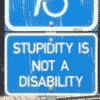

Google schimbă, din nou, algoritmii după care ordonează paginile relevante în rezultatele căutării. Motorul de căutare va penaliza site-urile supra-optimizate, în tentativa de a-şi proteja utilizatorii de spam-ul web (black hat webspam). Pentru cei care nu sunt pasionaţi de SEO (optimizare pentru motoarele de căutare), ştirea sună aşa: “Google s-a săturat de textele care par [...]

Victor Ponta începe să semene a lider popular. Cea mai recentă declaraţie a şefului PSD e şi cea mai eficientă. “Nici dacă îi împuşti, nu e suficient” a spus copreşedintele USL referindu-se la adversarii politici, în contextul discuţiilor despre impozitarea pensiilor mai mari de 740 de lei. Avem aproape şase milioane de pensionari, o masă [...]

Brânza e pe bani. La fel şi amenda. Constatând această incontestabilă potrivire, un poliţist local din Slobozia s-a gândit să ceară unui şofer drept şpagă…ceva brânzică. De vreo 100 de lei, aşa, să fie, căci nu poţi aştepta mare brânză pentru o parcare neregulamentară. Cetăţeanul amendat ştia însă să aleagă brânza de zer, motiv pentru [...]

Facebook a făcut publice rezultatele financiare înregistrate în primul trimestru al anului 2012. Compania a obţinut un profit net de 205 milioane USD, în scădere cu 12% comparativ cu perioada similară a anului trecut, în ciuda majorării cifrei de afaceri. Facebook Inc. a raportat venituri de 1,06 miliarde de dolari, mai mari cu 45%. Cheltuielile [...]

Oamenii caută conţinut de calitate original şi laborios. Publicul vrea abordări sofisticate, idei noi, dezbateri şi argumente. Textele trebuie scrise corect şi cursiv pentru a-ţi atrage cititori, generatori de trafic. Asta spune teoria. Să trecem la practică şi să vedem care e realitatea. Mai jos, vă prezentăm cele mai frecvente 15 căutări efectuate cu Google [...]

Două companii private au un conflict comercial. Nu se înţeleg asupra unei clauze contractuale şi rup colaborarea. Concret, Antena Group – Intact Media (trustul familiei Voiculescu, mai pe înţelesul tuturor) cere operatorului RCS-RDS (controlat de Zoltán Teszári) 7 milioane de euro pentru a permite retransmisia posturilor Antena 1 şi Antena 3 prin satelit. RCS-RDS zice [...]
- Sunt Liviu Dumitraşcu, realizator şi director de programe la Speranţa TV. Discutăm astăzi, în emisiunea Perspective, despre droguri, cu invitatul nostru, domnul doctor psihiatru Eugen Hrişcu. – Nu mă cheamă aşa. Eu sunt Sorin Minea! – Sorin Minea! Sorin Minea? De ce oare am făcut această gafă de proporţii? – Nu ştiu. Puteam să [...]

De când e gravidă, parcă s-a tâmpit, se confesează exasperat partenerul de viaţă al unei femei aflate în perioada de gestaţie. Maliţioşii ar spune că ofilirea inteligenţei viitoarelor mămici se produce încă dinaintea concepţiei fătului, mai ales dacă urmaşul este mult dorit şi cu nerăbdare aşteptat. În cazul acesta, aspiranta la titlul de “graviduţă” (înfiorător diminutiv) [...]

Ei sunt semenii noştri oameni. E doar parţial relevant faptul că personajele principale sunt ţigani şi că scena se petrece în România, la Craiova. Relevant e că sunt reprezentanţi ai arhetipului uman, fiinţele din preajma oricăruia dintre noi. O femeie, victima unui accident rutier, agonizează pe caldarâm. E ziua în amiaza mare, strada abundă în [...]

Sonia Simionov (foto), reporterul de televiziune al Antenei 3 care îl acuză pe comisarul Christian Ciocan că ar fi hărţuit-o sexual, e o fire sportivă pasionată de sporturi acvatice şi jocul cu bilele, după cum confirmă şi pozele de mai jos. Înainte de Paşte, jurnalista a trimis un e-mail pe adresa şefilor purtătorului de cuvânt [...]
Transelectrica cheltuieşte 7000 de euro pentru a studia rutele de migraţie ale păsărilor călătoare, Electrica îşi ia mochetă de aproape un milion de euro, Romgaz dă trei milioane RON pe servicii de fotocopiere, Hidreolectrica se încălzeşte cu lemne de foc în valoare de 36.000 de euro, iar RADET Bucureşti a implementat de mult dieta pe [...]
Un cutremur cu magnitudinea 6,7 pe scara Richter va zgudui România în anul 2007! Aşa trebuie să fie, fiindcă declaraţia aparţine lui Gheorghe Mărmureanu, directorul Institutului Naţional de Fizică a Pământului. (vezi ştirea Cutremur anunţat pentru 2007) Staţi un pic. 2007 a fost acum cinci ani. Să reluăm: Un seism catastrofal va avea loc în [...]